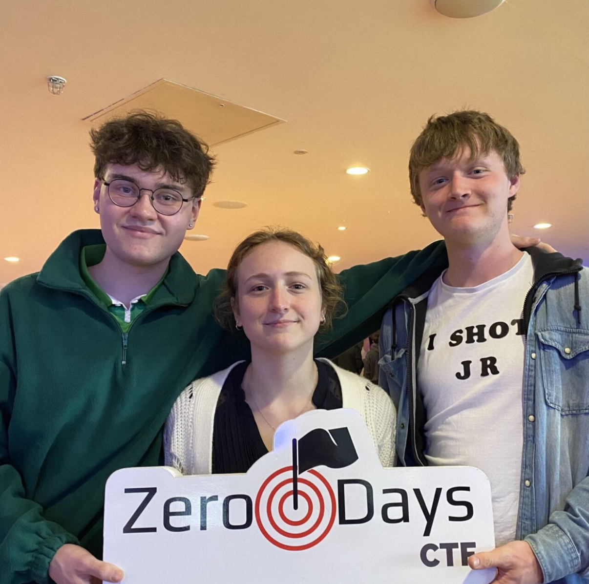
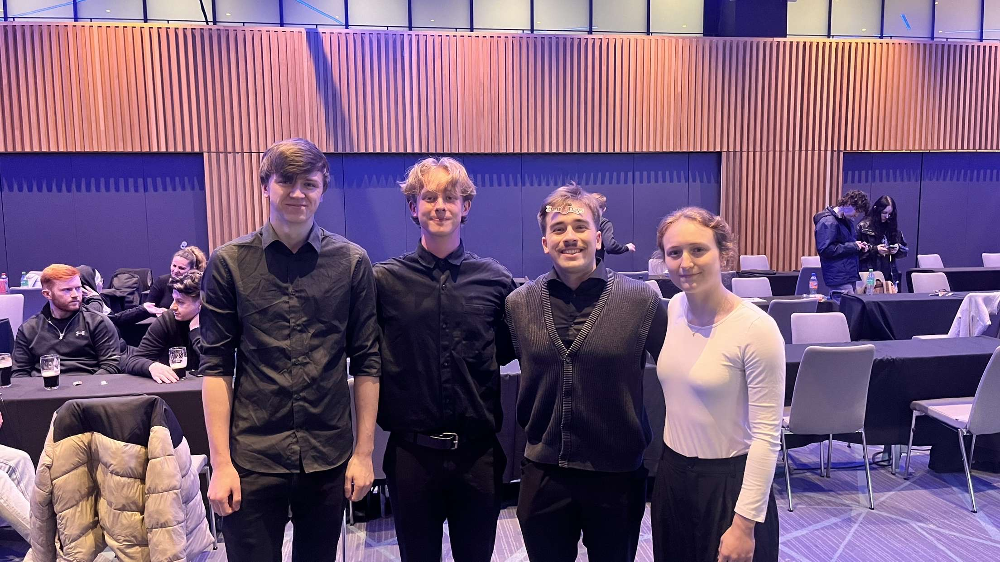
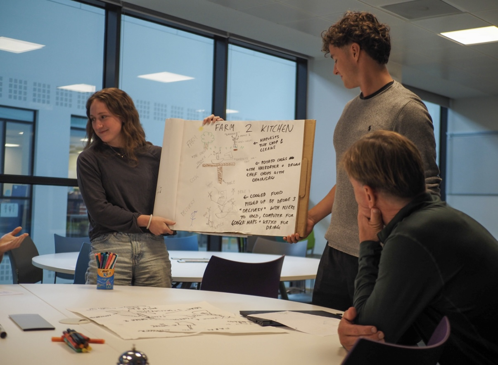
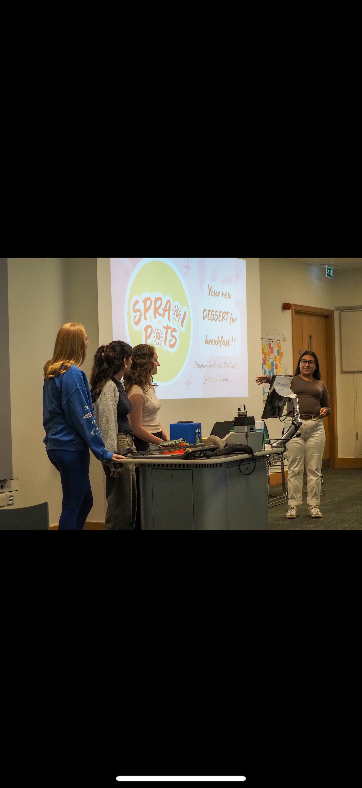

College Experiences
Hackathons & Competitions
✦ Accepted to HackMIT 2026 — I'll be heading to my first international hackathon this fall. Check back here after for the project we build.
My first CTF was at Galway University, which got me hooked on hands-on security.
My second was Zero Days, where our team ranked in the open category.
These events sharpened skills in web, crypto, reversing, OSINT, and fast teamwork under pressure.


Essentials to Entrepreneurship (UCD Innovation Academy)
I completed Essentials to Entrepreneurship in the Innovation Academy at UCD,
an experiential course designed to help students think and work like entrepreneurs. We spent significant time
learning the mindset through lessons (customer discovery, value propositions, business models,
branding, and pitching), activities (rapid prototyping, market interviews, and testing assumptions),
and structured reflections that pushed us to iterate and improve based on evidence.
We then put those skills into practice with a team project. Our brief was to design a product that is
sustainable, ready-to-eat, and attractive to the Irish market.
Our team created Spraoi Pots (“Spraoi” means fun in Irish): a premium Greek yogurt paired with granola.
The concept focuses on locally sourced ingredients, eco-friendly packaging, and a
social impact model where a portion of revenue supports Irish farmers. We explored positioning Spraoi Pots
as a protein-forward, grab-and-go option for students, athletes, and health-conscious consumers, with an initial
channel strategy of high-end markets and fairs before scaling to retailers.
As part of the project, we developed branding, unit economics, and a go-to-market plan, then delivered a final pitch to the class.
You can view the presentation here:
Spraoi Pots Pitch (PDF)
.


COMP31000: Literature Review
As part of the COMP31000 - Intro to Research & Sci Comm module, I conducted a literature review titled
"Predicting Human Actions via Computational Technologies". The review examines how accurately computational
models, using sensor data and behavioural traces, can predict individual human actions.
I analyzed 11 papers from the ACM database, focusing on mobility, interaction, and latent traits. The findings indicate that
while hybrid models achieve high accuracy in physical tasks, predicting internal psychological states remains a complex challenge.
You can read the full paper here:
Download Research Paper (PDF)
Clubs & Involvement
I’m involved in Lacrosse, Networking Society, Women in STEM,
Sub-Aqua, and AI in Medicine.
I serve on the executive committee of the AI in Medicine club, focusing on
the computer science side and collaborating with technical partners. The society is
still being set up, and details are actively being worked out.
College Courses
I'm pursuing a Computer Science with Data Science & Artificial Intelligence degree at UCD,
now in my final year. Here's my full course history, organized by year -> click a year to expand it.
Year 1 · 2023/24
- Language Use and Communication (LING10010)
- Algorithmic Problem Solving (COMP10030)
- Introduction to Computer Architecture (COMP10040)
- Formal Foundations (COMP10070)
- Computer Programming I (COMP10110)
- Functional Programming (COMP10300)
- Matrix Algebra (MATH10200)
- Software Engineering Project I (COMP10050)
- Computer Programming II (COMP10120)
- Storytelling (DSCY10100)
- Foundations of Mathematics for Computer Science I (MATH10210)
- Foundations of Mathematics for Computer Science II (MATH10220)
- Statistics with Python (STAT10430)
Year 2 · 2024/25
- Materials in Society (DSCY10070)
- Digital Systems (COMP20020)
- Databases and Information Systems I (COMP20070)
- Discrete Mathematics for Computer Science (COMP20110)
- Computer Networking (COMP20320)
- Object-Oriented Programming (COMP20350)
- Software Engineering Project II (COMP20050)
- Intro to Operating Systems (COMP20180)
- Data Structures (COMP20280)
- Algorithms (COMP20290)
- Linear Algebra II (MST20050)
Year 3 · 2025/26
- Introduction to Artificial Intelligence (COMP30030)
- Data Science in Python (COMP30760)
- Intro to Research and Scientific Communication (COMP31000)
- Essentials of Entrepreneurship: Action and Mindset (IA20020)
- Probability (STAT20200)
- Information Visualisation (COMP30750)
- Programming for Big Data (COMP30770)
- Data Science in Practice (COMP30780)
- Network Analysis (COMP30850)
Year 4 (Final Year) · 2026/27 - In Progress
Autumn Trimester
- Professional Placement - crediting my Scotiabank internship (SCI30080)
- Machine Learning (COMP47490)
- Blockchain & Decentralisation (COMP41770)
- Data Mining (COMP40370)
- Cloud Computing (COMP30520)
- Connectionist Computing (COMP30230)
Spring Trimester (upcoming)
- Generative AI: Language Models (COMP47980)
- Quantum Machine Learning (COMP47950)
- Optimisation (COMP30930)
I'm on track to graduate in 2027 with a strong foundation in computer science,
mathematics, artificial intelligence, and data science.